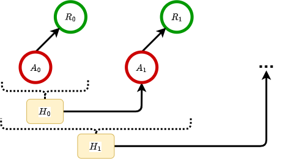

Multi-Armed Bandits (MAB)#
The multi-armed bandit (MAB) [1] is the most classical version of the bandit problems, in which an agent will sequentially select an item (arm) from a few and then receive a random reward for the item selected. MAB has been extensively studied and widely applied to different areas, including healthcare, recommender system, and finance, to name a few. See [1] for a detailed review of MAB and [2] for a survey of practical applications. Among them, since the reward distributions are typically unknown in real-world applications, the central task of a MAB algorithm is to learn the distributions from feedback received and find the optimal item to maximize the cumulative rewards or, equivalently, to minimize the cumulative regret. For example, considering the motivating example Recommender Systems, suppose that there are a few of movie geners available to be recommended, MAB algorithms aims to find and recommend the optimal movie genres whenever a user visits, with the ultimate objective of optimizing the overall user satisfication. This chapter focuses on the MAB problems by illustrating a group of classical algorithms to tackle the well-known exploration-exploitation trade-off, including
\(\epsilon\)-greedy,
Thompson Sampling (TS),
Upper Confidence Bounds (UCB).
Problem Setting#
Let \(T\) be the total number of rounds, and \(K\) be the number of arms (actions to be selected). The agent would choose one arm at each round \(t = 1, \dots, T\). Then the agent will receive the corresponding stochastic reward \(R_t\) from the environment. Denote the reward that would be received if arm \(a\) is played as \(R_t(a)\), which we will refer to as the potential reward of arm \(a\). Since, in most real applications, reward distribution of the random variable \(R_t(a)\) is always unknown, the agent needs to learn the reward distributions for each arm \(a\) from feedback received. Overall, the objective is to find a bandit algorithm to maximize the cumulative Reward \(\sum_{t=1}^{T}R_{t}\).
Graphical Data Structure#

Real Data#
1. MovieLens
Movie Lens is a website that helps users find the movies they like and where they will rate the recommended movies. MovieLens 1M dataset is a dataset including the observations collected in an online movie recommendation experiment and is widely used to generate data for online bandit simulation studies. The goal of the simulation studies below is to learn the reward distribution of different movie genres and hence to recommend the optimal movie genres to the users to optimize the cumulative user satisfaction. In other words, every time a user visits the website, the agent will recommend a movie genre (\(A_t\)) to the user, and then the user will give a rating (\(R_t\)) to the genre recommended. We assume that users’ satisfaction is fully reflected through the ratings. Therefore, the ultimate goal of the bandit algorithms is to optimize the cumulative ratings received by finding and recommending the optimal movie genre that will receive the highest rating. In this chapter, we mainly focus on the top 5 Genres, including
Comedy: \(a=0\),
Drama: \(a=1\),
Action: \(a=2\),
Thriller: \(a=3\),
Sci-Fi: \(a=4\).
Therefore, \(K=5\). We preprocessed the dataset to leave users with at least 500 data points, which gives us N=175 users. Furthermore, there are two different types of the reward \(R_t\):
Gaussian Bandit: \(R_t\) is a numerical variable, taking the value of \(\{1,2,3,4,5\}\), where 1 is the least satisfied and 5 is the most satisfied. In the following table, we summarize the empirical distribution of rates for each genre.
1 |
2 |
3 |
4 |
5 |
|
|---|---|---|---|---|---|
Comedy(0) |
.081 |
.153 |
.311 |
.309 |
.146 |
Drama(1) |
.045 |
.114 |
.288 |
.350 |
.204 |
Action(2) |
.096 |
.170 |
.312 |
.287 |
.135 |
Thriller(3) |
.076 |
.160 |
.313 |
.305 |
.146 |
Sci-Fi(4) |
.104 |
.176 |
.300 |
.278 |
.143 |
Bernoulli Bandit: \(R_t\) is a binary variable, =1 if the rating is higher than 3. In the following table, we summarize the empirical probability of getting a reward of 1 for each genre.
Comedy(0) |
Drama(1) |
Action(2) |
Thriller(3) |
Sci-Fi(4) |
|---|---|---|---|---|
.455 |
.553 |
.421 |
.451 |
.420 |
Reference#
[1] Slivkins, A. (2019). Introduction to multi-armed bandits. arXiv preprint arXiv:1904.07272.
[2] Bouneffouf, D. and Rish, I. (2019). A survey on practical applications of multi-armed and contextual bandits. arXiv preprint arXiv:1904.10040.